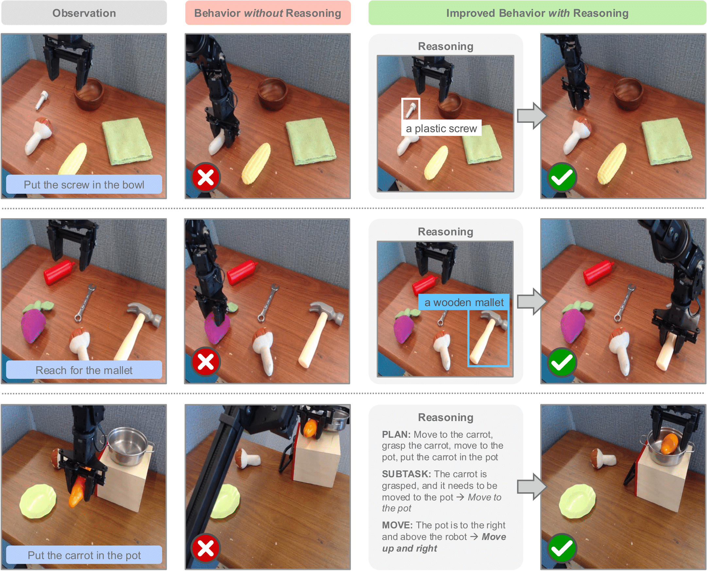

Robot chain-of-thought reasoning (CoT)—wherein a model predicts helpful intermediate representations before choosing actions—provides an effective method for improving the generalization and performance of robot policies, especially vision-language-action models (VLAs). While such approaches have been shown to improve performance and generalization, they suffer from core limitations, like needing specialized robot reasoning data and slow inference speeds. To design new robot reasoning approaches that address these issues, a more complete characterization of why reasoning helps policy performance is critical. We hypothesize several mechanisms by which robot reasoning improves policies: (1) better representation learning, (2) improved learning curricularization, and (3) increased expressivity. We then devise simple variants of robot CoT reasoning to isolate and test each one. We find that learning to generate reasonings does lead to better VLA representations, while attending to the reasonings aids in actually leveraging these features for improved action prediction. Our results provide us with a better understanding of why CoT reasoning helps VLAs, which we use to introduce two simple and lightweight alternative recipes for robot reasoning. Our proposed approaches achieve significant performance gains over non-reasoning policies, state-of-the-art results on the LIBERO-90 benchmark, and a 3x inference speedup compared to standard robot reasoning.
To develop better embodied robot reasoning methods, we first need to understand why reasoning helps robot policies in the first place. We present three hypotheses for why this might be the case:
Schematic illustrating all policy variants for testing our three hypotheses.
We create simple variants of Embodied Chain-of-Thought Reasoning (ECoT) to isolate and test each of these hypotheses:
Our ECoT-Lite policies outperform standard VLAs in both simulation and real-world evaluations, while being significantly faster than standard ECoT.
We train VLAs using all the above recipes, as well as both an ECoT and standard (non-reasoning) VLA baseline (all using the MiniVLA architecture and codebase). We evaluate all these policies on the LIBERO-90 simulated manipulation benchmark. We find that the most performant variants are reasoning dropout and reasoning pre-training, which we call ECoT-Lite. We then reproduce and validate these approaches with OpenVLA-based policies on real-world Bridge WidowX manipulation tasks.
We find that both full ECoT and our reasoning dropout policy achieve the best performance on LIBERO-90 (90.8% and 89.4% respectively), slightly outperforming past state-of-the-art (88.6%). The reasoning pre-training policy comes close (87.1%) as well. Notably, both these methods do not produce test-time reasonings, making them much faster than ECoT.
In contrast, reasoning co-training is less effective than these two approaches (84.2%), even though it likewise learns representations from reasonings. This suggests that not all representation learning approaches are equally conducive for positive transfer between the reasoning and action prediction tasks. Nevertheless, co-training outperforms the non-reasoning standard VLA baseline (82.0%). This all strongly supports Hyp. 1.
We also find that reasoning scaffolding performs comparably to co-training (84.1%), in weak support of Hyp. 2. However, thinking tokens performs worse than the standard VLA (78.9 - 79.8%), which is evidence against Hyp. 3. This suggests expanded expressivity is not helpful for robot reasoning (even when using a small 1B parameter MiniVLA), and that the reasoning tokens must be meaningful to be useful.
These analyses are repeated in harder variants of the LIBERO-90 benchmark, wherein we perturb the task objects' starting locations and add distractors. The above trends hold for these challenge splits as well.
We find that reasoning dropout and reasoning pre-training are effective for real-world manipulation tasks conducted in the Bridge WidowX environment as well. As with LIBERO, both approaches similarly improve over the standard BC recipe while being around 3x faster than ECoT.
Many of the common failure modes of the reasoning dropout policy in Bridge seem to be fixed by having test-time reasonings.
Curiously, reasoning pre-training is more performant than reasoning dropout in Bridge, reversing the trend seen in LIBERO. We suspect this is because reasoning dropout is more effective in narrower domains; many of said policy's failure modes seem to be intuitively solved by "turning on" test-time reasonings. However, reasoning pre-training maintains good generalization performance; it matches or outperforms standard ECoT in all but one semantic generalization Bridge task.
Based on our findings, we make prescriptions for when to use each of the above robot reasoning approaches.
Standard Embodied Chain-of-Thought Reasoning policies are the most performant, but they are significantly slower than the other approaches. They are best for tasks where performance is critical and speed is not a concern.
As both ECoT-Lite strategies do not generate test-time reasonings, they are much faster, matching the inference speeds of standard VLA policies.
Reasoning pre-training seems more effective in diverse domains— it matches or surpasses the semantic generalization capabilities of ECoT in all but one Bridge task. As the approach involves tuning on just reasonings and just actions separately, it also does not require paired embodied reasoning data. However, by needing to train on these tasks sequentially, it needs more consecutive gradient steps to expose the policy to an equal amount of reasoning and action data.
Finally, reasoning dropout seems more performant in narrow domains, like LIBERO (where it matches full ECoT and surpasses state-of-the-art performance). Additionally, its training recipe is almost identical to standard ECoT (the only difference is that reasonings are occasionally dropped during training). Thus, they allow users to turn test-time reasonings off and on as needed.
@article{Chen25-ecot-lite,
title={Training Strategies for Efficient Embodied Reasoning},
author={William Chen and Suneel Belkhale and Suvir Mirchandani and Oier Mees and Danny Driess and Karl Pertsch and Sergey Levine},
journal = {arXiv preprint arXiv:2505.08243},
year={2025},
}